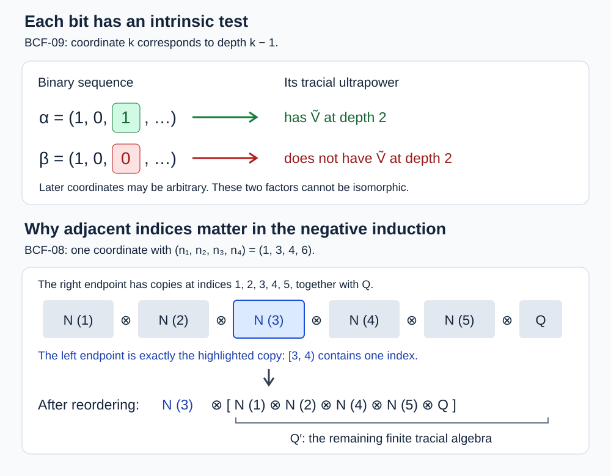

A continuum of separable type II₁ factors
We construct a family of separable type \(\mathrm{II}_1\) factors indexed by infinite binary sequences and prove that different sequences give nonisomorphic factors. A property of relative commutants in one fixed tracial ultrapower detects each individual bit. The proof includes both initial cases, both induction directions, and the passage from ultrapower invariants to ordinary isomorphism classes.
Use the countable groups \(T_0(\Gamma),T_1(\Gamma)\), their tails \(C_n=\bigoplus_{j\geq n}\Gamma_j\), and their finite-support groups \(K_n\) from Subgroup embeddings in an amalgam through Uniform tail estimates and the factor construction. For a finite binary word \(\alpha=(\alpha_1,\ldots,\alpha_k)\), write
\[ T_\alpha(\Gamma)=T_{\alpha_1}\circ\cdots\circ T_{\alpha_k}(\Gamma), \qquad M_\alpha(\Gamma)=L(T_\alpha(\Gamma)). \tag{BCF.1} \]For infinite words use the increasing union and the factor constructed in RSG-07. Fix a free ultrafilter \(\omega\) on \(\mathbb N\), whose existence and scalar limits were proved in Coordinate operations in a tracial ultraproduct. All tensor products and ultraproducts below use the specified faithful normal tracial states. Subalgebras are unital, and separability means separability of the predual.
The group and tail estimates are RSG; the tracial products, ultraproducts, residual nets, intrinsic depth and intermediate-algebra transfer are Tracial products, coefficients and separability through Passing depth through an intermediate algebra. We also use the continuous calculus of The bounded prerequisite boundary, the normal right action and trace-preserving expectations of The trace core and its entire modular domain through Bimodule order, uniqueness and the exact Hilbert projection, the convex unitary-orbit theorem A unitary subgroup and the trace projection, and the order characterization of normality The positive-map equivalence. The mathematical source for the binary invariant is Boutonnet, Chifan and Ioana, II₁ factors with non-isomorphic ultrapowers, Definition 4.1 and Theorem 4.2 with Lemmas 4.3–4.8. We prove the negative direction for groups containing a free pair, which suffices for the entire continuum family constructed here.
The invariant and contractive representatives
Say that a finite von Neumann algebra \(\mathcal X\) has property \(\widetilde V\) if there is a separable subalgebra \(D\subseteq\mathcal X\) such that, whenever
\[ B\subseteq D'\cap\mathcal X, \qquad C\subseteq\mathcal X \tag{BCF.2} \]are separable subalgebras, some unitary \(u\in\mathcal X\) satisfies \(uBu^*\subseteq C'\cap\mathcal X\). We use this formula on all finite von Neumann algebras. It is preserved by normal star isomorphisms: transport \(D,B,C,u\), their inclusions and their commutation relations; normal isomorphisms preserve separable preduals. Let \(\widetilde V^{(0)}=\widetilde V\), and let \(\widetilde V^{(j+1)}\) mean that \(\widetilde V^{(j)}\) holds at depth one in the sense of RUP-07. That theorem proves that these conditions are intrinsic and isomorphism invariant.
We will use contractive representatives of unitaries. If \(y\) is any contraction in \(\prod_\omega A_s\), choose a uniformly bounded representative \((y_s)\) and set
\[ \begin{gathered} x_s=y_s f(y_s^*y_s),\\ f(t)=\begin{cases}1,&0\leq t\leq1,\\t^{-1/2},&t\geq1.\end{cases} \end{gathered} \tag{BCF.3} \]On a common bounded spectral interval, \(f\) is continuous. BK-01 gives \(x_s^*x_s=(y_s^*y_s)f(y_s^*y_s)^2\leq1\), so \(\|x_s\|\leq1\). The quotient homomorphism commutes with this calculus: it does so for polynomials, is contractive, and hence commutes with their uniform limits. Because \(y^*y\leq1\), the class of \((x_s)\) is still \(y\). If \(y\) is unitary, trace preservation in RUP-02 gives
\[ \lim_\omega\tau_s(1-x_sx_s^*)=0, \qquad \lim_\omega\|x_s\|_2=1. \tag{BCF.4} \]The representatives themselves need not be unitary.
An explicit gap for a free pair
Let \(a,b\) freely generate a copy of \(\mathbb F_2\). The graph joining \(g\) to \(ag,a^{-1}g,bg,b^{-1}g\) is a tree: a cycle without backtracking would give a nonempty reduced word equal to the identity, contrary to the free-product normal form used in RSG-01. Root it at the identity. The root has four children, and every other vertex has one parent and three children.
For a finitely supported Hilbert-valued function \(f\) on the vertices, each parent-child edge satisfies
\[ 2\|f(p)\|\|f(c)\| \leq3^{-1/2}\|f(p)\|^2+3^{1/2}\|f(c)\|^2. \tag{BCF.5} \]This is the nonnegativity of the square of \(3^{-1/4}\|f(p)\|-3^{1/4}\|f(c)\|\). Sum over the edges. In the quadratic form of the adjacency operator \(A=\lambda_a+\lambda_{a^{-1}}+\lambda_b+\lambda_{b^{-1}}\), each unoriented edge contributes twice the real part of its inner product. Cauchy–Schwarz and (BCF.5) bound this contribution. A nonroot vertex has total coefficient \(3/\sqrt3+\sqrt3=2\sqrt3\); the root coefficient \(4/\sqrt3\) is smaller. Therefore
\[ \operatorname{Re}\langle Af,f\rangle\leq2\sqrt3\|f\|_2^2. \tag{BCF.6} \]Finite-support functions are dense, and each translation is unitary, so the inequality extends to all square-summable functions. Expanding the two squared differences yields
\[ d\|f\|_2^2\leq \|\lambda_a f-f\|_2^2+\|\lambda_b f-f\|_2^2, \qquad d=4-2\sqrt3>0. \tag{BCF.7} \]It holds for any orthogonal direct sum of regular representations, by applying it on each summand and adding. If \(a,b\) form a free pair in a larger group \(\Gamma\), the restriction of the regular representation of \(\Gamma\) decomposes over the free subgroup's left orbits into such a direct sum. Thus (BCF.7) holds there with the same constant.
A free action on a tail-coset space
Fix \(n\geq1\), let \(G=T_0(\Gamma)\), and put \(H=C_{n+1}\). Let \(\Sigma\) be generated by the entire base \(\bigoplus_j\Gamma_j\) and \(t_1,\ldots,t_n\); let \(\Delta\) be generated by \(H\) and \(t_j\) for \(j\geq n+1\). Then
\[ G=\Sigma*_H\Delta. \tag{BCF.8} \]Indeed, first construct \(\Delta\) by the injective successive attachments of RSG-01, starting at \(H\). All the later attachment subgroups \(C_j\), \(j\geq n+1\), lie in \(H\). The presentations of \(G\) and of the amalgam in (BCF.8) consequently give inverse homomorphisms fixing the base and every \(t_j\). This also identifies the two factors with the indicated subgroups. The subgroup \(H\) is normal in \(\Sigma\): it is normal in the base direct sum, and every \(t_j\), \(j\leq n\), commutes with it.
We need a consequence of amalgam normal form. If \(z\in A_1\) is conjugate into \(A_2\) inside \(A_1*_{A_0}A_2\), then it is conjugate inside \(A_1\) into \(A_0\). To prove this, write a conjugator as \(h_0c\), with \(c\in A_1\) and \(h_0\) either empty or a reduced word whose last syllable lies in \(A_2\setminus A_0\). If \(h_0\) is empty, the conjugated element lies in \(A_1\cap A_2=A_0\). Otherwise, if \(czc^{-1}\notin A_0\), the word \(h_0(czc^{-1})h_0^{-1}\) is reduced of length at least three and cannot belong to \(A_2\), again by normal form. This contradiction proves the assertion.
Suppose \(h\in\Gamma_n\) and \(g^{-1}hg\in H\) for some \(g\in G\). Apply the assertion to (BCF.8). It makes \(h\) conjugate inside \(\Sigma\) into \(H\); normality puts \(h\) itself in \(H\). The direct-sum embedding gives \(\Gamma_n\cap H=\{1\}\), so \(h=1\). Hence \(\Gamma_n\) acts freely by left multiplication on the coset set \(G/H=\{gH:g\in G\}\).
Choose an orbit representative for each orbit. Freeness identifies that orbit with \(\Gamma_n\) by \(h\mapsto hgH\). The permutation representation on \(\ell^2(G/H)\) is thus a direct sum of regular representations of \(\Gamma_n\). If \(\Gamma\) contains the free pair \(a,b\), its copies at coordinate \(n\) satisfy (BCF.7) on this coset space, uniformly in \(n\).
The coset estimate with tensor factors
Let \(Q\) be any finite tracial algebra. RUP-01 identifies \(L^2(L(G)\bar\otimes Q)\) with \(\ell^2(G;L^2(Q))\). Decompose it into the orthogonal blocks indexed by the cosets \(gH\), and let \(P_{gH}\) be the block projections. Define
\[ \mathcal T(x)(gH)=\|P_{gH}x\|_2. \tag{BCF.9} \]This map preserves total norm and is 1-Lipschitz by the reverse triangle inequality in each block. Left multiplication by \(u_h=\lambda_h\otimes1\) permutes the blocks, so \(\mathcal T(u_hx)=\lambda(h)\mathcal T(x)\), where \(\lambda\) is the coset permutation representation.
Right multiplication by every \(v\in L(H)\bar\otimes Q\) reduces each block. For the group generators in \(H\) this follows from \(gHH=gH\); right multiplication by elements of \(Q\) leaves the group coordinate unchanged. The block projection commutes with those right actions and their adjoints. The normal right representation of TA-02 extends this commutation to the von Neumann algebra they generate. In particular, for a contraction \(v\), \(\mathcal T(xv)\leq\mathcal T(x)\) coordinatewise. For bounded \(x\),
\[ \begin{aligned} \|\mathcal T(x)-\mathcal T(xv)\|_2^2 &\leq\|x\|_2^2-\|xv\|_2^2\\ &=\tau\bigl(x^*x(1-vv^*)\bigr)\\ &\leq\|x\|^2\tau(1-vv^*). \end{aligned} \tag{BCF.10} \]The first line sums \((r-s)^2\leq r^2-s^2\) for \(0\leq s\leq r\). For the last line, insert \((1-vv^*)^{1/2}\) on both sides of \(x^*x\), use \(x^*x\leq\|x\|^2 1\), and apply the positive trace. Traciality gives the middle identity.
The triangle inequality, equivariance and the Lipschitz bound imply
\[ \|\lambda(h)\mathcal T(x)-\mathcal T(x)\|_2 \leq\|u_hx-xv\|_2+\|x\|\tau(1-vv^*)^{1/2}. \tag{BCF.11} \]Let \(\pi_n:\Gamma\to\Gamma_n\) be the coordinate map. Combining BCF-02–03 with (BCF.11), for two possibly different contractions \(v_a,v_b\in L(C_{n+1})\bar\otimes Q\), gives
\[ \begin{aligned} d\|x\|_2^2 &\leq\sum_{h\in\{a,b\}} \left(\|u_{\pi_n(h)}x-xv_h\|_2 +\|x\|\tau(1-v_hv_h^*)^{1/2}\right)^2. \end{aligned} \tag{BCF.12} \]The constant \(d=4-2\sqrt3\) is independent of \(n\) and \(Q\). The auxiliary algebra need not be a factor or separable.
The positive base case
Theorem. For any countable \(\Gamma\) and any positive integers \(t_s\), the algebra
\[ \mathcal M=\prod_\omega L(T_1(\Gamma))^{\bar\otimes t_s} \tag{BCF.13} \]has property \(\widetilde V\).
Proof. Put \(M=L(T_1(\Gamma))\) and \(P_1=L(\bigoplus_j\Gamma_j)\). RUP-04, with tail index one, supplies a separable \(D\subseteq\mathcal M\) such that \(D'\cap\mathcal M\subseteq\prod_\omega P_1^{\bar\otimes t_s}\). Let \(B\subseteq D'\cap\mathcal M\) and \(C\subseteq\mathcal M\) be separable. RUP-01 gives 2-norm dense sequences \((b^{(j)})\) and \((c^{(j)})\) in their unit balls. By BCF-01 choose contraction representatives \(b_s^{(j)}\in P_1^{\bar\otimes t_s}\) and \(c_s^{(j)}\in M^{\bar\otimes t_s}\).
Set \(R_m=L(\bigoplus_{1\leq i\leq m}\Gamma_i)\). The trace-preserving expectations onto \(R_m^{\bar\otimes t_s}\), for fixed \(s\), converge in 2-norm to the identity on \(P_1^{\bar\otimes t_s}\). Indeed TA-04 identifies them with the Hilbert projections onto increasing Fourier-coordinate subspaces whose union is dense. The same reasoning, using \(\bigcup_nK_n=T_1(\Gamma)\), applies to the expectations onto \(L(K_n)^{\bar\otimes t_s}\) in \(M^{\bar\otimes t_s}\). Finite tensor powers cause no difficulty: a finite set of group tuples has a common finite support bound. These expectations are operator-norm contractions by TA-03.
Choose \(m_s,n_s\geq1\) so that the expectations approximate the first \(s\) representatives in both lists within \(1/s\) in 2-norm. Denote the expected contractions by \(\widehat b_s^{(j)},\widehat c_s^{(j)}\). Let \(\sigma_s\) be the finite permutation swapping \(k\) with \(n_s+m_s+k\), for \(1\leq k\leq m_s\), and fixing all other coordinates. The transpositions are disjoint. It sends the first \(m_s\) coordinates beyond \(n_s\). Those later coordinates commute with \(K_{n_s}\): they commute with its base, are fixed by its permutations, and commute with \(t_1,\ldots,t_{n_s}\) by the defining relations. Thus, with \(u_s=\lambda_{\sigma_s}^{\otimes t_s}\),
\[ [u_s\widehat b_s^{(j)}u_s^*,\widehat c_s^{(l)}]=0. \tag{BCF.14} \]For \(s\geq\max(j,l)\), the trace multiplication bounds of TA-01 give
\[ \|[u_sb_s^{(j)}u_s^*,c_s^{(l)}]\|_2\leq4/s. \tag{BCF.15} \]The two error commutators contribute at most \(2/s\) each because every approximant and original representative is contractive. Since \(\omega\) is free, \(u=(u_s)_\omega\) conjugates every \(b^{(j)}\) to an element commuting with every \(c^{(l)}\). The inequality \(\|[x,y]\|_2\leq2\|y\|\|x\|_2\) and density extend this first to all of \(C\), then to all of \(B\). Hence \(uBu^*\subseteq C'\cap\mathcal M\), as required. \(\square\)
The negative base case for every intermediate algebra
Theorem. Suppose the countable group \(\Gamma\) contains a free pair. Set \(M=L(T_0(\Gamma))\), and let \(Q_s\) be arbitrary finite tracial algebras. No intermediate von Neumann algebra
\[ M^\omega\subseteq\mathcal X \subseteq\prod_\omega(M\bar\otimes Q_s) \tag{BCF.16} \]has property \(\widetilde V\).
Proof. Suppose \(D\subseteq\mathcal X\) were a separable witness. Write \(P_n=L(C_n)\). RUP-05 supplies integers \(i_s\geq1\) such that \(\prod_\omega P_{i_s}\subseteq D'\cap M^\omega\). Define the group homomorphism
\[ \rho(g)=(u_{\pi_{i_s}(g)})_\omega, \qquad B=W^*(\rho(\Gamma)). \tag{BCF.17} \]It takes values in the indicated tail algebra. Countability of \(\Gamma\) and RUP-01 make \(B\) separable, and \(B\subseteq D'\cap\mathcal X\). RUP-04 applied at tail indices \(i_s+1\) gives a separable \(C\subseteq M^\omega\) with
\[ C'\cap\mathcal X\subseteq \prod_\omega(P_{i_s+1}\bar\otimes Q_s). \tag{BCF.18} \]The supposed property produces a unitary \(w\in\mathcal X\) satisfying \(wBw^*\subseteq C'\cap\mathcal X\). Put \(\xi=w^*\) and \(v_g=w\rho(g)w^*\). Then
\[ \rho(g)\xi=\xi v_g. \tag{BCF.19} \]Here \(v_g\) is a unitary in the tail ultraproduct of (BCF.18). Choose contraction representatives \(\xi_s\in M\bar\otimes Q_s\) and \(v_{g,s}\in P_{i_s+1}\bar\otimes Q_s\) by BCF-01. For each of the two free generators \(g=a,b\), equality of the quotient classes says
\[ \begin{gathered} \lim_\omega\|u_{\pi_{i_s}(g)}\xi_s-\xi_s v_{g,s}\|_2=0,\\ \lim_\omega\tau_s(1-v_{g,s}v_{g,s}^*)=0, \qquad \lim_\omega\|\xi_s\|_2=1. \end{gathered} \tag{BCF.20} \]Apply (BCF.12) with \(n=i_s\), \(Q=Q_s\) and \(x=\xi_s\). Its left side tends to the positive constant \(d\), whereas its right side tends to zero by (BCF.20) and \(\|\xi_s\|\leq1\). This contradiction proves the theorem. \(\square\)
Positive bits at every depth
Theorem. Let \(\Gamma\) be countable, let \(\alpha\) be a binary word of length \(k\geq1\) with \(\alpha_k=1\), and let \(t_s\geq1\). Then \(\prod_\omega M_\alpha(\Gamma)^{\bar\otimes t_s}\) has \(\widetilde V^{(k-1)}\).
Proof. For \(k=1\) this is BCF-05. Suppose the assertion holds at length \(k\), and consider a word \(\alpha\) of length \(k+1\) ending in one. Put \(\beta=(\alpha_2,\ldots,\alpha_{k+1})\), so \(\beta_k=1\), and let \(\Lambda=T_\beta(\Gamma)\). This group is countable and ICC by RSG-02 because \(\beta\) is nonempty. We have \(M_\alpha(\Gamma)=L(T_{\alpha_1}(\Lambda))\).
Use the residual net \(A_i=\prod_\omega P_{i_s}^{\bar\otimes t_s}\) of RUP-06 for this outer group, indexed by positive integer sequences. Given \(i_1\), choose \(i_2=i_1+1\) coordinatewise. For any \(i_3>i_2\), choose \(i_4=i_3+1\). The right endpoint in the depth condition is
\[ \begin{aligned} A_{i_4}'\cap A_{i_1} &=\prod_\omega P_{(i_1)_s,(i_4)_s}^{\bar\otimes t_s}\\ &\cong\prod_\omega M_\beta(\Gamma)^{\bar\otimes v_s}, \qquad v_s=((i_4)_s-(i_1)_s)t_s\geq1. \end{aligned} \tag{BCF.21} \]The first equality uses ICC and RUP-06; the second uses the finite direct-product Fourier identification from RSG-07. By induction it has \(\widetilde V^{(k-1)}\). It is itself an allowed intermediate algebra between \(A_{i_3}'\cap A_{i_2}\) and \(A_{i_4}'\cap A_{i_1}\). All four quantifiers of RUP-07 have now been met, proving \(\widetilde V^{(k)}\). \(\square\)
Negative bits persist through intermediate algebras
Theorem. Let \(\Gamma\) be countable and contain a free pair. If \(\alpha\) has length \(k\geq1\) and \(\alpha_k=0\), then no intermediate algebra
\[ M_\alpha(\Gamma)^\omega\subseteq\mathcal X \subseteq\prod_\omega(M_\alpha(\Gamma)\bar\otimes Q_s) \tag{BCF.22} \]has \(\widetilde V^{(k-1)}\), for any finite tracial \(Q_s\).
Proof. The case \(k=1\) is BCF-06. Suppose the theorem holds at length \(k\), and let \(\alpha\) have length \(k+1\) with last bit zero. Set \(\beta=(\alpha_2,\ldots,\alpha_{k+1})\), so \(\beta_k=0\), and put \(N=M_\beta(\Gamma)\). As in BCF-07, the nonempty word \(\beta\) makes \(T_\beta(\Gamma)\) ICC, and RUP-06 provides the residual pair \((A_i\subseteq B_i)\) for the outer group, with tensor exponent one and auxiliary algebras \(Q_s\).
If \(\mathcal X\) in (BCF.22) had \(\widetilde V^{(k)}\), RUP-08 would give, for every \(i_1\), an \(i_2>i_1\) such that every \(i_3>i_2\) admits \(i_4>i_3\) and an intermediate algebra \(\mathcal Y\) with \(\widetilde V^{(k-1)}\) in
\[ B_{i_3}'\cap A_{i_2}\subseteq\mathcal Y \subseteq A_{i_4}'\cap B_{i_1}. \tag{BCF.23} \]Choose \(i_3=i_2+1\) coordinatewise. Write \(n_{r,s}=(i_r)_s\). The two endpoint formulas of RUP-06 turn (BCF.23) into
\[ \prod_\omega P_{n_{2,s},n_{2,s}+1} \subseteq\mathcal Y\subseteq \prod_\omega(P_{n_{1,s},n_{4,s}}\bar\otimes Q_s). \tag{BCF.24} \]In coordinate \(s\), the left algebra is the single copy of \(N\) at index \(n_{2,s}\). The right algebra is a tensor product of the copies of \(N\) at indices \(n_{1,s},\ldots,n_{4,s}-1\), followed by \(Q_s\). Reorder those tensor factors to put the distinguished copy first, using the unitary permutation of their trace Hilbert spaces. This gives trace-preserving identifications of the entire inclusion with
\[ N^\omega\subseteq\mathcal Y\subseteq \prod_\omega(N\bar\otimes Q'_s), \qquad Q'_s=N^{\bar\otimes(n_{4,s}-n_{1,s}-1)}\bar\otimes Q_s. \tag{BCF.25} \]Here \(\mathcal Y\) denotes its transported image. The embeddings of the left endpoint become exactly \(x_s\mapsto x_s\otimes1\); thus the inclusion, not merely the two abstract endpoint algebras, has the form needed for induction. The exponents are nonnegative because the four indices are strictly increasing. Coordinate trace preservation makes these identifications descend to the ultraproducts by RUP-02.
Since \(\beta\) has length \(k\) and \(\beta_k=0\), the induction hypothesis forbids \(\widetilde V^{(k-1)}\) for this \(\mathcal Y\). The contradiction proves the result at length \(k+1\). \(\square\)
Reading every coordinate of an infinite word
Take the base group \(\Gamma=\mathbb F_2\). For each infinite binary sequence \(\alpha\), RSG-07 constructs a countable ICC group \(G_\alpha\) and a separable type \(\mathrm{II}_1\) factor \(M_\alpha=L(G_\alpha)\). Fix \(k\geq1\). Let \(\gamma=(\alpha_{k+1},\alpha_{k+2},\ldots)\) and let \(\Lambda=G_\gamma\). The union compatibility in RSG-02 and RSG-07 gives
\[ G_\alpha=T_{(\alpha_1,\ldots,\alpha_k)}(\Lambda). \tag{BCF.26} \]For precision, after discarding the finitely many initial stages, the defining union has stages \(T_{(\alpha_1,\ldots,\alpha_k)}(T_{(\alpha_{k+1},\ldots,\alpha_m)}(\mathbb F_2))\), \(m>k\). The proved commutation with increasing unions identifies their union with the right side of (BCF.26), with the same coordinate-one embeddings.
The group \(\Lambda\) is countable. It contains a free pair, since its first nonempty prefix group contains the free subgroup on \(t_1,t_2\) from RSG-02, and every later embedding is injective. Apply BCF-07 with all \(t_s=1\) when \(\alpha_k=1\). Apply BCF-08 with all \(Q_s=\mathbb C\) when \(\alpha_k=0\). We obtain the exact test
\[ M_\alpha^\omega\text{ has }\widetilde V^{(k-1)} \quad\Longleftrightarrow\quad \alpha_k=1. \tag{BCF.27} \]The same fixed free ultrafilter works for every \(k\) and every \(\alpha\). If \(\alpha\ne\beta\), some coordinate differs, and (BCF.27) and the isomorphism invariance proved in BCF-01 show that \(M_\alpha^\omega\) and \(M_\beta^\omega\) are not normally star isomorphic.

The top panel applies (BCF.27) at \(k=3\): the two indicated families have different depth-two invariants, independently of their later bits. The bottom panel shows one coordinate of (BCF.24)–(BCF.25), with \((n_1,n_2,n_3,n_4)=(1,3,4,6)\). The distinguished third copy becomes the first tensor factor; all four other copies and \(Q_s\) form \(Q'_s\). The induction uses the same exact rearrangement for arbitrary admissible indices.
Ordinary isomorphisms and the continuum count
We finish by verifying that an ordinary star isomorphism of the original factors would induce the forbidden ultrapower isomorphism.
First, a star isomorphism \(\phi:M\to N\) of von Neumann algebras is normal. Positivity is characterized by squares, so \(\phi\) and \(\phi^{-1}\) preserve order; the identity is preserved because \(\phi(1)\) acts as the identity on the surjective image. If \(x_i\uparrow x\) is bounded and positive, \(\phi(x)\) is an upper bound for the \(\phi(x_i)\). Any other self-adjoint upper bound pulls back under \(\phi^{-1}\) to an upper bound for the \(x_i\), and hence dominates \(x\). Thus \(\phi(x)\) is their least upper bound. The maps are bounded: \(x^*x\leq\|x\|^2 1\) and positivity imply \(\|\phi(x)\|\leq\|x\|\), and the inverse gives equality. NP-04 now proves ultraweak continuity of both maps.
Next, a finite factor has at most one normal tracial state. Let \(\tau\) be its faithful normal tracial state, and let \(\sigma\) be any normal tracial state. EL-02, applied to the full unitary group, places \(E_{\mathbb C1}(x)=\tau(x)1\) in the ultraweakly closed convex hull of the unitary conjugates of \(x\). Indeed the commutant of all unitaries is the center: every self-adjoint contraction \(h\) is the real part of the unitary \(h+i(1-h^2)^{1/2}\), by BK-01, and real and imaginary parts span the algebra. The factor's center is \(\mathbb C1\). Traciality makes \(\sigma\) constant with value \(\sigma(x)\) on that orbit, and normality and linearity keep it constant on the closed convex hull. Evaluation at \(\tau(x)1\) proves \(\sigma(x)=\tau(x)\) for every \(x\).
Consequently a star isomorphism of finite factors preserves their normalized traces: apply the uniqueness just proved to \(\tau_N\circ\phi\). It therefore preserves both operator norms and tracial 2-norms. The coordinate map
\[ (x_s)_\omega\longmapsto(\phi(x_s))_\omega \tag{BCF.28} \]is well defined on bounded sequences modulo the 2-norm null ideal, with inverse induced by \(\phi^{-1}\). It preserves the ultraproduct trace and is normal by RUP-02 (or by the order argument above). Thus \(M_\alpha\cong M_\beta\) would imply \(M_\alpha^\omega\cong M_\beta^\omega\), contradicting BCF-09 whenever \(\alpha\ne\beta\).
Finally \(\alpha\mapsto\{k:\alpha_k=1\}\) is a bijection between infinite binary sequences and the power set of \(\mathbb N\), with inverse the characteristic sequence. There are \(2^{\aleph_0}\) such sequences. The construction assigns a separable type \(\mathrm{II}_1\) factor to each, and the preceding argument makes their isomorphism classes pairwise distinct. Hence this family contains exactly a continuum of isomorphism classes. \(\square\)